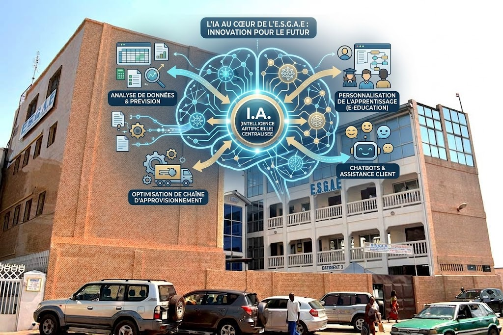

⭐ Article à la Une

Technologie
L'Intelligence Artificielle va-t-elle redéfinir notre humanité ?
L'Intelligence Artificielle n'est plus une promesse lointaine. Elle est déjà là, discrète mais omniprésente, transformant notre quotidien à une vitesse vertigineuse...
« Ce qui nous distingue n'est pas la capacité à calculer, mais la capacité à nous demander pourquoi nous calculons. »
Parcourir par catégorie
Tous
Technologie
Réalité
Science
Société
Développement